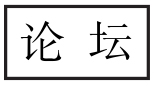
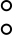
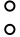
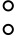
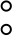
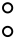
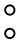

霁野兄：
六月六十二日信，都收到了。季黻早已辞职回家。凤举我到此后，曾寄他一信，没有回信，所以也不便再写信了。
托罗茨基的书我没有带出，现已写信给密斯许[84]，托她在寓中一寻，如寻到，当送上。
从北新书屋寄上钱百元，寄款时所写的寄银人和收银人，和信面上所写者同。
这里的北新书屋，我想关闭了，因为我不久总须走开，所以此信到后，请不必再寄书籍来了。
我看看各处的情形，觉得北京倒不坏，所以下半年也许回京去。
这几天我生病，这一类热病，闽粤很多的，几天可好，没有什么要紧。
迅 六，卅

中国的学者[85] （达）学者在国家的地位

只如湖山花鸟供人们欣赏的么那么学者只是国家的妆饰品
说不到实用上去人们对于学者的崇拜也只在他的文学艺术上罢了然而欧美近代的文明何一非学者的脑力所构成人们对于学者不但是文学艺术上的崇拜而给予人类以精神和物质
也足令世界人类永远纪念着但是中国的学者又怎样呢我们以为中国也许没有学者罢若是我国也有学者
那么在最近的过去时期中多少也给我们开辟一处思想的新领域而使人们得了一种新倾向但是我们中国的所谓学者大半是开倒车
人们也许承认康有为辜鸿铭一流人是学者罢然而他们的思想是这样的我们要靠他领导时只好向后转最可惜者现代诗人邓南遮在一度参加战争之后便减少了人们的热望么若说丁文江们充军阀杀人的刽子手这简直变了恶魔了那么
中国的学者还是埋头伏案做他学者的生活好了若向政治上混终会给政治的炉火变换了气质这又何苦来呢这是一九二七年（注意：二十世纪已经过了1/4以上！）六月九日香港的《循环日报》[86]的社论。
硬拉D’Annunzio[87]入籍而骂之，真是无妄之灾。然而硬将外人名字译成中国式的人们，亦与有罪焉。我们在中国谈什么文艺呢？呜呼邓南遮！
附注：——
但该报发如此之“新”的议论，是少有的。前几天转载严修[88]们反对跳舞的信，还有许多空白字。你想，严先生之文而还以为有违碍字样，则方正可知。
六，九，夜
注 释
[84] 密斯许 指许羡苏。
[85] 本文原为剪报（连同剪报后的鲁迅按语附于此信）。文中“现代诗人……热望么”句下的密圈为鲁迅所加。
[86] 《循环日报》 香港出版的报纸，1874年由王韬创办，约于1947年停刊。
[87] D’Annunzio 邓南遮（1863—1938），意大利作家。他因拥护法西斯主义，深受墨索里尼的宠爱，获得“亲王”称号。
[88] 严修（1860—1929） 字范孙，天津市人。清末进士，曾任学部侍郎、北洋政府教育总长。